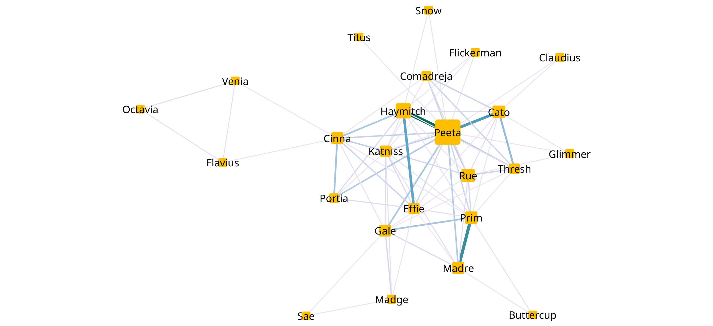
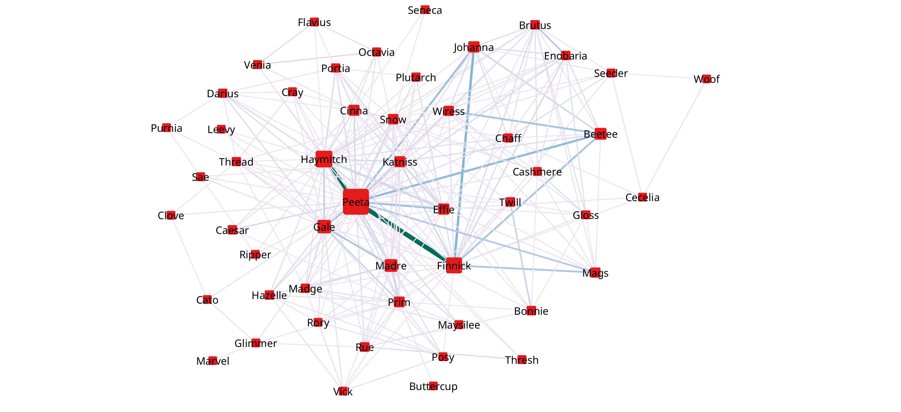
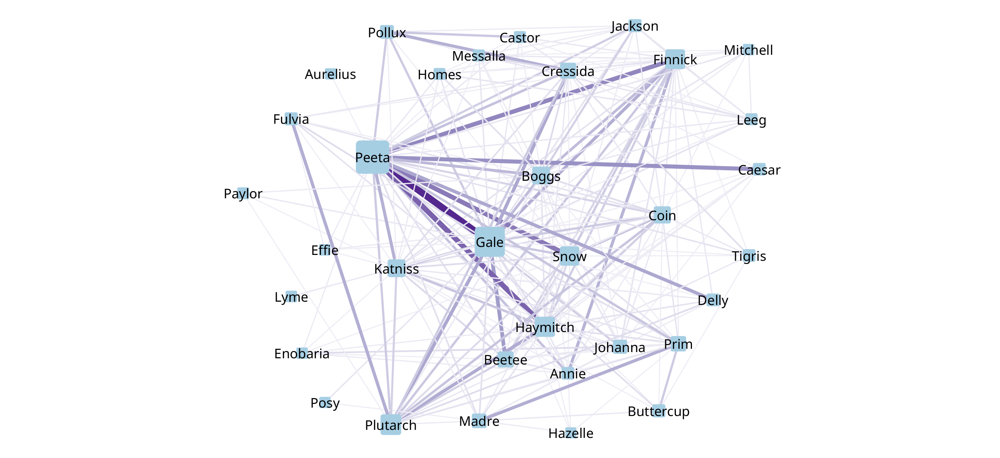

Redes
Se realizaron las redes de interacciones de los personajes de la saga de libros de Los Juegos del Hambre de la autora Suzane Collins. Una red es un grafo conformado por nodos, que representan los elementos de algún conjunto, y aristas, las cuales unen a los nodos a través de una relación dentro del sistema. En este trabajo se considera una red no direccionada, es decir, las conexiones son simétricas; También se considera el peso de las aristas; y normalmente el tamaño de los nodos depende del grado de estos(número de conexiones), sin embargo, el tamaño será relacionado a la cantidad de apariciones del elemento en el texto seleccionado. Las métricas seleccionadas fueron las siguientes:
- Grado: Es la cantidad de conexiones que tiene un nodo con otros, es decir, la cantidad de aristas que tiene un nodo.
- Grado ponderado: Es la suma de los pesos de las aristas que inciden en un nodo seleccionado.
- Intermediación: Esta médida muestra la cantidad de veces que aparece un nodo en los caminos más cortos entre otros dos nodos del grafo y se divide entre el valor máximo para normalizarlo.
- Cercanía: Es la distancia promedio normalizada entre los caminos más cortos de un nodo seleccionado y todos los demás.
A continuación se analizarán las redes de interacción de los personajes. Los grafos fueron generados con Cytoscape y las métricas se obtuvieron con la libreria Networkx de Python. Puesto que tenemos una interacción entre personajes dos a dos; se consideró una red no direccionada. El tamaño del nodo varía dependiendo de la cantidad de menciones en el libro y el peso(grosor) de las aristas depende de las veces que los dos personajes conectados interactuaron (separación entre los nombres con una distancia menor o igual a 15 palabras).
La historia de los Juegos del Hambre transcurre en el país de Panem, conformado por 12 distritos y un Capitolio, en donde cada año se
celebran los juegos del Hambre; un evento organizado por el Capitolio donde se
eligen al azar a 2 jóvenes, un hombre y una mujer, de cada distritos para encerrarlos en una arena y hacerlos combatir a muerte hasta que
quede uno en pie como castigo y con el fin de recordarle a los pobladores de los distritos los horrores
de la guerra provocada por lo rebeldes y como una demostración de control total del Capitolio.
Los libros son narrados en primera persona por la protagonista Katniss Everdeen, una jóven del distrito 12 que se ofreció como
tributo en los juegos del hambre para salvar a su hermana que resultó seleccionada para participar en el torneo.
Los juegos del Hambre
En el primer libro se narra la experiencia de Katniss, de 16 años de edad, dentro de los 74° juegos del hambre tras ofrecerse como
tributo durante la cosecha (el día de elección de tributos) para que su hermana Prim no tenga que ir a la batalla. Su compañero es
Peeta Mellarck y tiene sentido que sea el personaje más mencionado pues en medio de los juegos se cambia una regla: que en lugar de
tener un solo ganador, pueden ser dos siempre y cuando ambos tributos sean del mismo distrito, entonces katniss comienza a preocuparse
por Peeta para que ambos resulten victoriosos y logren sobrevivir. Otro personaje relevante es Haymitch quien funge de mentor para
Katniss y Peeta, por lo cual está en constante contacto con ellos dos y se puede observar que justo la interacción con más peso
se da entre Peeta y Haymitch. Effie es la representante del Capitolio durante la cosecha en el distrito 12 y tiene una relación
estrecha a Haymitch lo cual se confirma con el grafo. Por otro lado, Rue es una niña del distrito 11 con la cual Katniss hizo alianza
hasta el momento de su muerte en manos del tributo del distrito 1; su primer asesinato de Katniss fue justo de este chicho en venganza
por lo que le hizo a Rue. Además, Katniss desarrolló un estrecho lazo con Rue a tal punto que le hizo una especie de funeral dentro
de los juegos lo que provoco motines contra el personal del capitolio en los distritos. Por esta razón es que Rue tiene tantas apariciones
pero no lazos fuertes con otros personajes.
Cato es un jovén del distrido 2 que fue entrenado como tributo profesional, es decir, que desde pequeño
lo prepararon para competir en los juegos del hambre y Peeta hace alianza con él aunque al final de la historia estos quedan como
sobrevivientes junto a Katniss, por lo cual, su interacción también es de las más fuertes.
Cato es el personaje con mayor intermediación, es decir,
es el personaje que más une a diferentes personajes de la historia, sin embargo, el valor asignado es muy bajo lo cual se tocará en la
conclusión.
Por otra parte, Alrededor de Prim hay dos personajes que se relacionan de manera considerable desde la perspectiva de Katniss: Su propia
madre y a Gale Hawthorne, quién es su amigo en el distrito 12, al cual le pidió que cuidara de ellas dos mientras ella iba a la competencia.
Un personaje que no es tan mencionado ni tiene grandes lazos es el presidente de Panem: Coriolanus Snow. Aunque parezca que no es tan
relevante, es importante poner atención en él; pues durante el desarrollo de la historia se observa cada vez más su relevancia.
La red muestra claramente los personajes más importantes para Katniss así como los grupos en los que los relaciona. Peeta es el
personaje con más relevancia y es el que tiene mayor cercanía a los demás personajes aunque su intermediación es baja.
De hecho, como se mencionó, Cato es el que mayor intermediación tiene; sin embargo, su valor es muy bajo \( \approx 0.25 \) de un
máximo de \( 1 \) lo que nos dice que la red es muy robusta, es decir, no hay un nodo que al quitarlo esta corra el riesgo de partirse.
Red de interacciones

Métricas de los Personajes
| Personaje | Apariciones | Grado | Grado Ponderado | Intermediación | Cercanía |
|---|---|---|---|---|---|
| Peeta | 483 | 17 | 201 | 0.0963 | 0.7053 |
| Haymitch | 189 | 11 | 118 | 0.0191 | 0.5719 |
| Rue | 138 | 11 | 45 | 0.0496 | 0.5426 |
| Cato | 124 | 10 | 73 | 0.2504 | 0.5161 |
| Prim | 112 | 11 | 80 | 0.2067 | 0.5878 |
| Madre | 103 | 7 | 65 | 0.0250 | 0.4921 |
| Cinna | 99 | 10 | 61 | 0.2157 | 0.5878 |
| Gale | 97 | 9 | 48 | 0.0779 | 0.5568 |
| Katniss | 78 | 13 | 47 | 0.1578 | 0.6224 |
| Effie | 77 | 9 | 58 | 0.0914 | 0.5568 |
| Thresh | 57 | 8 | 50 | 0.0483 | 0.5038 |
| Caesar | 37 | 6 | 17 | 0.0637 | 0.4600 |
| Comadreja | 34 | 6 | 28 | 0.0422 | 0.4921 |
| Portia | 28 | 5 | 37 | 0.0000 | 0.4809 |
| Glimmer | 18 | 3 | 3 | 0.0830 | 0.4232 |
| Madge | 14 | 4 | 10 | 0.0300 | 0.4149 |
| Venia | 9 | 3 | 6 | 0.0000 | 0.3847 |
| Claudius | 9 | 2 | 2 | 0.0429 | 0.4149 |
| Sae | 8 | 2 | 2 | 0.0211 | 0.3648 |
| Flavius | 6 | 3 | 5 | 0.0700 | 0.3847 |
| Octavia | 6 | 2 | 5 | 0.0000 | 0.2784 |
| Snow | 5 | 3 | 3 | 0.0344 | 0.4232 |
| Buttercup | 3 | 2 | 3 | 0.0100 | 0.3712 |
| Atala | 3 | 0 | 0 | 0.0000 | 0.0000 |
| Titus | 2 | 1 | 1 | 0.0000 | 0.4069 |
| Johanna | 1 | 0 | 0 | 0.0000 | 0.0000 |
En llamas
Esta segunda parte comienza en la transición entre los 74° y 75° juegos durante la llamada gira de la victoria donde los tributos ganadores, Katniss y Peeta en este caso, son obligados a recorrer los distritos con el objetivo de preservar la calma en los distritos; sin embargo, gracias a la unión mostrada durante los juegos pasados con sus alidados, la presecia de Katniss provocó rebeldia entre los distritos lo cual molesta al presidente Snow, personaje que toma mayor relevancia en comparación al libro anterior al tener mucho más menciones (66 vs 5) y un grado de interacción más grande. Otra personaje que toma relevancia es Gale, quien comienza a ser un interés amoroso de Katniss lo cual molesta a Snow pues para calmar a los distritos, el capitolio vendió la idea de los amantes trágicos como razón para permitir a dos ganadores de la 74° edición de los juegos. Después de la gira, se realizó la cosecha de los 75° juegos del hambre, sin embargo, cada 25 años se celebra el vasallaje de los veinticinco en donde se cambian las reglas de elección de tributos por reglas más crueles para recordar el poder del capitolio. En está edición los tributos serán escogidos entre los ganadores de ediciones anteriores para recordar que ni los más fuertes pueden contra el capitolio. Esta obra es la más complicada de todas y se puede observar en el grafo con el crecimiento de personajes y de interacciones. También es posible notar que Peeta y Haymitch siguen siendo los personajes más importantes para Katniss pues nuevamente forman el mismo equipo que la edición pasada: Haymitch como mentor y Peeta junto con Katniss como tributos. Además en está edición, Katniss pide que tienen que lograr que Peeta sea el ganador de estos juegos por lo que la preocupación constante por este personaje se da durante todo el libro. Uno de los mayores puntos a destacar es la formación de un subgrupo con interacciones fuertes conformado por: Peeta, Finnick, Johanna, Beete, Wiress y Mags, pues estos forman una alianza junto con Katniss durante los 75° juegos donde al final lograr destruir el estadio donde competian y Katniss se desmaya para después despertar en un aerodeslizador con dirección al, creído extinto, distrito 13. Finalmente, Katniss despierta y se le es revelado que esa alianza se formó a propósito donde la verdadera intención era cuidar a Katniss pues se había convertido en un ícono de rebelión, explicando porque la interacción de estos personajes es muy fuerte.
Red de interacciones

Métricas de los personajes
| Personaje | Apariciones | Grado | Grado Ponderado | Intermediación | Cercanía |
|---|---|---|---|---|---|
| Peeta | 614 | 39 | 508 | 0.0489 | 0.7906 |
| Haymitch | 287 | 31 | 256 | 0.1179 | 0.7003 |
| Finnick | 259 | 25 | 269 | 0.0648 | 0.6366 |
| Gale | 173 | 19 | 148 | 0.0125 | 0.5906 |
| Madre | 145 | 20 | 124 | 0.0420 | 0.5978 |
| Beetee | 114 | 9 | 115 | 0.0021 | 0.5054 |
| Johanna | 94 | 11 | 116 | 0.0037 | 0.5271 |
| Effie | 93 | 14 | 95 | 0.0428 | 0.5570 |
| Katniss | 86 | 22 | 93 | 0.1445 | 0.6127 |
| Cinna | 84 | 17 | 64 | 0.0801 | 0.5767 |
| Prim | 78 | 20 | 86 | 0.1284 | 0.5978 |
| Snow | 66 | 20 | 50 | 0.1808 | 0.6052 |
| Mags | 57 | 9 | 56 | 0.0226 | 0.5106 |
| Wiress | 56 | 10 | 57 | 0.0048 | 0.5106 |
| Rue | 38 | 10 | 25 | 0.0519 | 0.5271 |
| Twill | 35 | 7 | 21 | 0.0324 | 0.5054 |
| Bonnie | 32 | 8 | 22 | 0.0396 | 0.4902 |
| Brutus | 29 | 15 | 69 | 0.0162 | 0.5570 |
| Hazelle | 29 | 9 | 30 | 0.0015 | 0.5106 |
| Enobaria | 28 | 12 | 66 | 0.0078 | 0.5328 |
| Caesar | 27 | 4 | 16 | 0.0004 | 0.4902 |
| Madge | 25 | 13 | 38 | 0.0490 | 0.5447 |
| Darius | 23 | 9 | 28 | 0.0185 | 0.5215 |
| Thread | 21 | 12 | 19 | 0.1377 | 0.5328 |
| Plutarch | 21 | 6 | 17 | 0.0024 | 0.4951 |
| Portia | 20 | 8 | 39 | 0.0183 | 0.5106 |
| Chaff | 19 | 11 | 37 | 0.0364 | 0.5328 |
| Octavia | 17 | 6 | 22 | 0.0000 | 0.4902 |
| Venia | 14 | 5 | 20 | 0.0000 | 0.4806 |
| Maysilee | 12 | 6 | 17 | 0.0016 | 0.4951 |
| Cray | 12 | 7 | 11 | 0.0118 | 0.4951 |
| Seeder | 11 | 8 | 15 | 0.0558 | 0.4902 |
| Thresh | 11 | 3 | 9 | 0.0016 | 0.4713 |
| Gloss | 11 | 9 | 25 | 0.0036 | 0.5054 |
| Sae | 10 | 5 | 7 | 0.0249 | 0.4759 |
| Flavius | 10 | 4 | 12 | 0.0046 | 0.4300 |
| Cashmere | 9 | 12 | 25 | 0.0324 | 0.5328 |
| Rory | 8 | 9 | 20 | 0.0089 | 0.5106 |
| Glimmer | 7 | 5 | 8 | 0.0456 | 0.4759 |
| Clove | 6 | 3 | 4 | 0.0299 | 0.4624 |
| Posy | 6 | 9 | 25 | 0.0005 | 0.5106 |
| Ripper | 6 | 3 | 4 | 0.0042 | 0.4713 |
| Seneca | 6 | 2 | 2 | 0.0016 | 0.3953 |
| Vick | 5 | 8 | 19 | 0.0032 | 0.4713 |
| Cecelia | 5 | 5 | 8 | 0.0073 | 0.4226 |
| Purnia | 4 | 3 | 3 | 0.0066 | 0.3714 |
| Woof | 3 | 2 | 3 | 0.0000 | 0.3335 |
| Cato | 3 | 3 | 6 | 0.0016 | 0.4539 |
| Buttercup | 2 | 1 | 1 | 0.0000 | 0.3742 |
| Marvel | 2 | 1 | 1 | 0.0000 | 0.3225 |
| Atala | 2 | 0 | 0 | 0.0000 | 0.0000 |
| Leevy | 1 | 3 | 3 | 0.0104 | 0.4713 |
Sinsajo
Red de interacciones

Métricas de los personajes
| Personaje | Apariciones | Grado | Grado Ponderado | Intermediación | Cercanía |
|---|---|---|---|---|---|
| Peeta | 427 | 28 | 422 | 0.0538 | 0.8188 |
| Gale | 364 | 30 | 309 | 0.0988 | 0.8643 |
| Plutarch | 186 | 18 | 180 | 0.0102 | 0.6482 |
| Haymitch | 176 | 19 | 166 | 0.0009 | 0.6620 |
| Finnick | 169 | 23 | 191 | 0.0803 | 0.7236 |
| Snow | 160 | 20 | 139 | 0.0856 | 0.6764 |
| Boggs | 130 | 21 | 118 | 0.0469 | 0.6914 |
| Katniss | 130 | 25 | 126 | 0.2168 | 0.7589 |
| Coin | 118 | 19 | 113 | 0.0040 | 0.6620 |
| Beetee | 98 | 14 | 96 | 0.0042 | 0.5984 |
| Cressida | 95 | 19 | 132 | 0.0267 | 0.6620 |
| Prim | 84 | 15 | 89 | 0.0441 | 0.6101 |
| Madre | 70 | 13 | 57 | 0.0542 | 0.5871 |
| Johanna | 60 | 16 | 56 | 0.0363 | 0.6223 |
| Pollux | 55 | 8 | 68 | 0.0055 | 0.5365 |
| Buttercup | 40 | 7 | 26 | 0.0341 | 0.5274 |
| Jackson | 39 | 12 | 53 | 0.0000 | 0.5762 |
| Fulvia | 39 | 9 | 47 | 0.0209 | 0.5365 |
| Delly | 35 | 8 | 48 | 0.0088 | 0.5365 |
| Tigris | 34 | 8 | 21 | 0.0331 | 0.5365 |
| Caesar | 32 | 8 | 42 | 0.0336 | 0.5186 |
| Annie | 31 | 16 | 68 | 0.0833 | 0.6223 |
| Leeg | 21 | 11 | 33 | 0.0098 | 0.5657 |
| Messalla | 21 | 11 | 29 | 0.0858 | 0.5657 |
| Castor | 19 | 9 | 31 | 0.0141 | 0.5459 |
| Paylor | 17 | 4 | 7 | 0.0049 | 0.4939 |
| Homes | 17 | 9 | 24 | 0.0173 | 0.5459 |
| Lyme | 11 | 1 | 3 | 0.0000 | 0.4576 |
| Effie | 10 | 5 | 7 | 0.0292 | 0.5101 |
| Enobaria | 9 | 7 | 16 | 0.0325 | 0.5101 |
| Mitchell | 9 | 9 | 17 | 0.0546 | 0.5459 |
| Posy | 5 | 2 | 5 | 0.0000 | 0.4644 |
| Aurelius | 5 | 1 | 1 | 0.0000 | 0.4445 |
| Hazelle | 2 | 5 | 6 | 0.0544 | 0.5018 |
| Vick | 0 | 0 | 0 | 0.0000 | 0.0000 |
| Rory | 0 | 0 | 0 | 0.0000 | 0.0000 |
Conclusiones
Recursos
En la siguiento liga se encuentran los códigos utilizados: Códigos